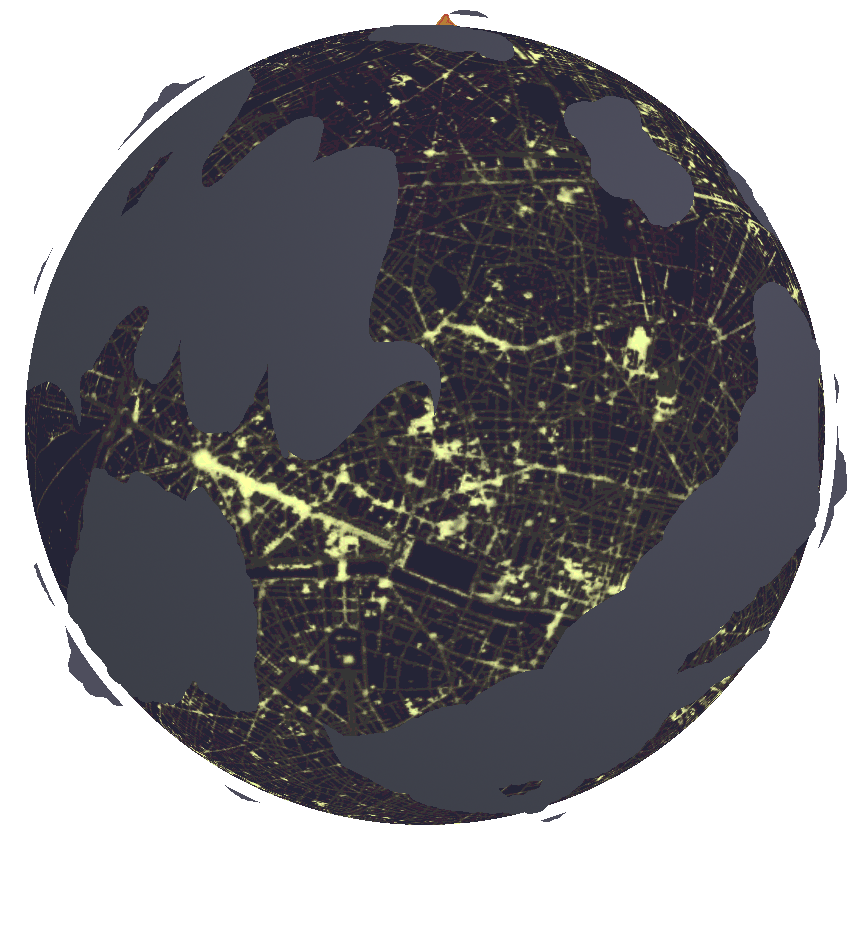

City World
City World is the result of playing with the many tools of photoshop to photobash an overhead view of the lights of a city into a planet while being inspired by the webcomic "Homestuck" and its aesthetic for strange planets. I always found myself fascinated with this concept as I see it in science fiction, whole planets that are urban metropolises. Putting those two together resulted in scouring the depths of google images for images that I feel could give off the impression of being a night skyline while still working as a texture for a planet.